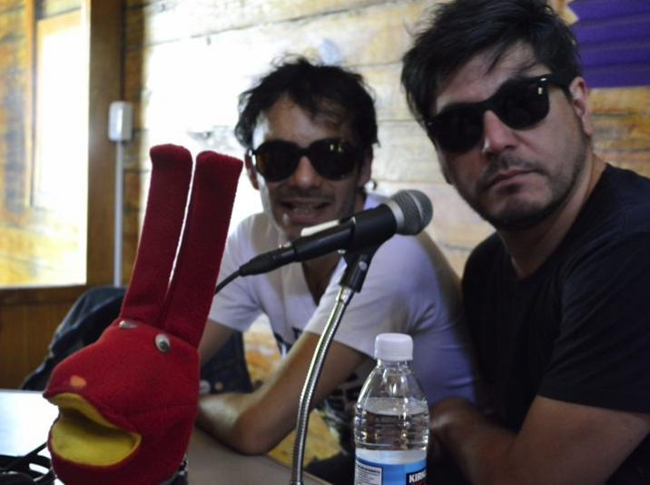

Animación Cultural
Servicios Educativos y Extensión
Es el área responsable de la atención directa a los distintos púbicos con visitas guiadas, talleres, presentaciones artísticas, ciclos de cine y el desarrollo de materiales lúdicos y didácticos, con los que se busca promover el conocimiento y valoración del patrimonio ferroviario mexicano. Cuenta con los espacios de animación cultural, como el Vagón de la ciencia, el Vagón de la radio, la Ludoteca, la Bebeteca y la Biblioteca pública.
Vías Alternas
Proyecto desarrollado desde el 2011 en coordinación con el Colectivo Subterráneos. Contempla la realización de festivales en los que destaca el trabajo de los colectivos y las propuestas alternativas de artistas y músicos, así como una serie de talleres integrales vinculados al periodismo cultural, el diseño editorial, el fotoperiodismo y la música alternativa.
Como resultado de los talleres de periodismo cultural se cuenta actualmente con dos producciones radiofónicas.
Contacto:
subterraneos@hotmail.com
www.subterraneos.com.mx
Producciones radiofónicas
Clicks, las buenas nuevas del rock
Difunde las nuevas producciones sonoras de índole local, nacional e internacional, destacando su discurso.
Conductores: Angie Rocker, Karen Alemán, Patricia López, Hugo Cabrera, Wendy Pardo
Contacto:
Rueda y Asfalto
En el quehacer cotidiano de la música, existen los llamados géneros musicales que van desde la cumbia, el rock, el bolero y otros ritmos que han marcado momentos históricos de la sociedad. En este programa se valora los procesos creativos de la música, sin importar el género en el que son expresados.
Conductor: Julián Baez Rosas
Contacto:
https://www.facebook.com/julian.baezrosas
Todas las producciones se transmiten a través de Radio de la Benemérita Universidad Autónoma del Estado de Puebla, Ruta Alternativa, Tico Sound, Radio Kaos.
http://www.subterraneos.com.mx/sec-radio.html
Contacto:
Festivales
Realizado en coordinación con el Museo Nacional de los Ferrocarriles Mexicanos, tiene como objetivo mostrar las alternativas de desarrollo cultural que se ofrecen en la ciudad por parte de organizaciones independientes. El Festival Vías Alternas se lleva a cabo cada año y contempla la realización de talleres, ciclos de cine, charlas y conciertos.
